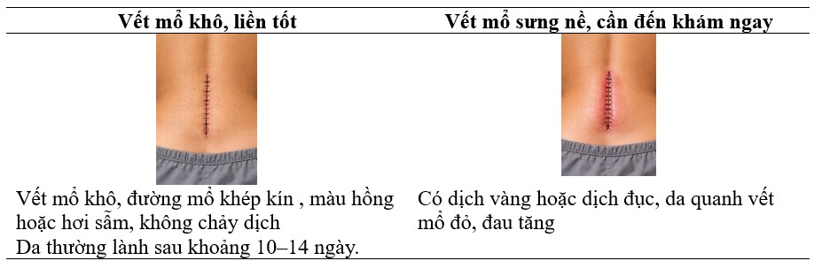

HƯỚNG DẪN CHĂM SÓC VẾT MỔ TẠI NHÀ
1. Giữ vết mổ sạch và khô- Luôn giữ vết mổ khô ráo, sạch sẽ.
- Không để nước, bụi bẩn hoặc hóa chất tiếp xúc trực tiếp với vết mổ.
- Cần tắm rửa vệ sinh vết mổ, tránh làm ướt băng vết mổ, nếu như bị ướt phải loại bỏ băng ướt và thay lại băng sạch ngay.
- Sau khi tháo băng vết mổ, có thể vệ sinh và tắm rửa bình thường, tránh chà sát quá mạnh vào vùng da mổ.
2. Thay băng vết mổ đúng cách- Rửa tay sạch trước và sau khi thay băng.
- Thay băng theo hướng dẫn của bác sĩ/điều dưỡng.
- Sử dụng băng, gạc sạch, vô khuẩn.
- Không tự ý dùng thuốc bôi, thuốc dân gian lên vết mổ.
3. Theo dõi dấu hiệu bất thườngLiên hệ cơ sở y tế ngay khi có các dấu hiệu:
- Vết mổ sưng, đỏ, nóng, đau tăng lên.
- Chảy mủ, dịch có mùi hôi.
- Sốt trên 38°C.
- Vết mổ chảy máu hoặc bung chỉ.

4. Dinh dưỡng hợp lý- Ăn đủ chất: đạm (thịt, cá, trứng), rau xanh, trái cây.
- Uống đủ nước (1,5–2 lít/ngày nếu không chống chỉ định).
- Hạn chế rượu bia, thuốc lá vì làm chậm lành vết thương.
5. Vận động phù hợp- Vận động nhẹ nhàng theo hướng dẫn.
- Tránh mang vác nặng hoặc vận động mạnh làm ảnh hưởng vết mổ.
- Nghỉ ngơi hợp lý, ngủ đủ giấc.
- Có thể ngủ ở bất kỳ tư thế nào khiến cảm thấy thoải mái.
- Nhiều bệnh nhân cảm thấy thoải mái khi ngủ trên ghế tựa.
- Việc khó ngủ trong vài tuần đầu sau phẫu thuật là điều bình thường.
6. Dùng thuốc đúng chỉ định- Uống thuốc theo đơn bác sĩ (kháng sinh, giảm đau…).
- Khi sử dụng hết thuốc mà các triệu chứng đau chưa đỡ, cần đến khám để được tư vấn và kê đơn thêm
- Không tự ý ngưng thuốc hoặc dùng thêm thuốc khác.
7. Tái khám đúng hẹn- Đến tái khám theo lịch sau khi ra viện 4 tuần để theo dõi diễn biến của tình trạng bệnh.
- Mang theo đơn thuốc và hồ sơ bệnh án khi tái khám.
- Khi có các dấu hiệu bất thường, có để đến tái khám ngay mà không cần chờ đến ngày hẹn.
HÃY LIÊN HỆ VỚI KHI CÓ CÁC DẤU HIỆU SAU- Đau dữ dội không thuyên giảm khi dùng thuốc giảm đau hoặc nghỉ ngơi.
- Sưng, đỏ hoặc chảy dịch từ vết mổ ngày càng nặng hơn.
- Giảm cảm giác ở cánh tay, chân hoặc bàn chân Khó khăn khi di chuyển.
- Tê bì hoặc yếu cơ mới xuất hiện.